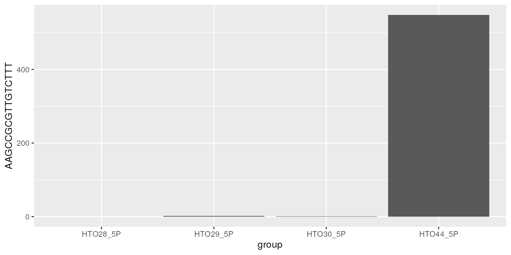
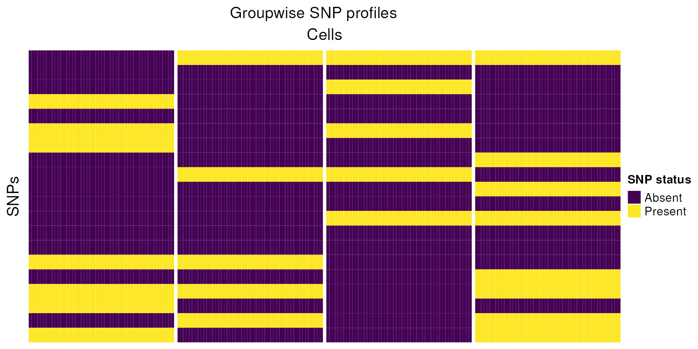
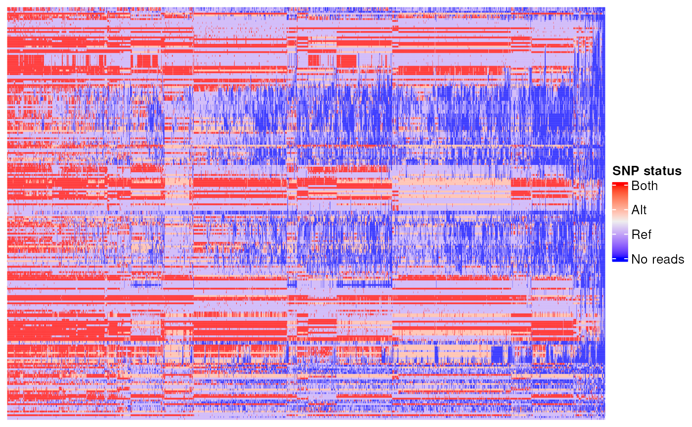

Intro to scRNAseq and demultiplexing
Michael Lynch
2023-07-30
Source:vignettes/a-intro-to-demultiplexing.Rmd
a-intro-to-demultiplexing.Rmd
library(SingleCellExperiment)
library(viridisLite)
library(ComplexHeatmap)
library(demuxSNP)
library(CiteFuse)
library(dittoSeq)
library(ggpubr)
library(Seurat)
library(gridExtra)
library(scater)
library(demultiplexingbioc23)Introduction to demultiplexing
scRNASeq
scRNAseq allows further understanding of cell states, heterogeneity, in TME and other areas. Sequencing costs are decreasing but remains a limiting factor in sample size.
For full analysis pipelines see ‘OSCA’ book.
Droplet based single cell sequencing was initially limited by the doublet rate (a technical artifact where two or more cells are captured in the same droplet) and the number of cells from each sample a researched was interested in sequencing. Cells from each biological sample had to be sequenced on a different lane, resulting in increased cost.
knitr::include_graphics("./images/nonmultiplexed.png")
Multiplexed (multi-sample) scRNAseq
Demultiplexing
Multiplexing is a technique to reduce sequencing cost by loading multiple samples per lane. Demultiplexing, is the assignment of cells back to their original sample, while also allowing the identification of some doublets cells.
knitr::include_graphics("./images/multiplexing.png")Multiplexed (multi-sample) scRNAseq
A number of experimental and computational methods have been proposed to facilitate this, but a universally robust algorithm remains elusive. Below, we introduce the two main approaches for demultiplexing and illustrate them with simplified examples.
Successful demultiplexing is critical, with misassigned or unassigned cells resulting in increased waste and lower detectable fold changes between groups.
Cell Hashing
Cells from each group are labelled with a distinct sequencable barcode tag (HTO or LMO) which results in a counts matrix after being sequenced. Due to non-specific binding, these counts form a bimodal distribution.
knitr::include_graphics("./images/hashing.png")Cell hashing
Such methods are generally computationally efficient. Their classification performance, however, is highly dependent on the tagging quality and many methods do not account for uncertainty in classification (Boggy et al. (2022), Kim et al. (2020) & Stoeckius et al. (2018)).
More recent methods, including demuxmix, assign a probability that a cell is from a particular group, or made up of multiple groups (doublet). This allows users to define a cut-off threshold for the assignment confidence. Accounting for uncertainty is an important feature for these types of algorithms. But, while they give the user greater flexibility in determining which cells to keep, this ultimately results in a trade-off between keeping cells which cannot be confidently called or discarding them - due to issues with tagging quality rather than RNA quality.
Example matrix:
data("CITEseq_example", package = "CiteFuse")
sce <- preprocessing(CITEseq_example)
altExp(sce,"HTO")<-as(altExp(sce,"HTO"),"SingleCellExperiment")
sce <- normaliseExprs(sce = sce, altExp_name = "HTO", transform = "log")
sce<-crossSampleDoublets(sce)## number of iterations= 20
## number of iterations= 24
## number of iterations= 46
## number of iterations= 50## 4 x 4 sparse Matrix of class "dgCMatrix"
## AAGCCGCGTTGTCTTT GATCGCGGTTATCGGT GGCTGGTAGAGGTTAT CTACACCCAATAGCAA
## HTO28_5P . 205 . 562
## HTO29_5P 2 3 3 209
## HTO30_5P 1 1 . .
## HTO44_5P 548 . 196 .Per cell:
Hashtag counts across cells
df<-data.frame(hto)
df$group<-rownames(df)
ggplot(data=df, aes(x=group, y=AAGCCGCGTTGTCTTT)) +
geom_bar(stat="identity")
Per hashtag
Hashtag counts across a Hashtag (bimodal distriution)
set.seed(1)
bg<-rnbinom(n=500,size=5,mu=2)
sig<-rnbinom(n=400,size=10,mu=50)
df<-data.frame(t(logcounts(altExp(sce,"HTO"))))
myplots<-plot_hashtag(df)## Warning: Using `bins = 30` by default. Pick better value with the argument
## `bins`.
## Warning: Using `bins = 30` by default. Pick better value with the argument
## `bins`.
## Warning: Using `bins = 30` by default. Pick better value with the argument
## `bins`.
## Warning: Using `bins = 30` by default. Pick better value with the argument
## `bins`.
do.call(grid.arrange,myplots)## Warning: Removed 1 rows containing missing values (`geom_bar()`).## Warning: Removed 1 rows containing missing values (`geom_bar()`).
## Removed 1 rows containing missing values (`geom_bar()`).
## Removed 1 rows containing missing values (`geom_bar()`).Reduction in hashing quality leads to reduction in cell hashing algorithm performance.
sce<-runPCA(sce, altexp="HTO", exprs_values = "logcounts")## Warning in check_numbers(k = k, nu = nu, nv = nv, limit = min(dim(x)) - : more
## singular values/vectors requested than available## Warning in (function (A, nv = 5, nu = nv, maxit = 1000, work = nv + 7, reorth =
## TRUE, : You're computing too large a percentage of total singular values, use a
## standard svd instead.
dittoDimPlot(sce,reduction.use="PCA","doubletClassify_between_label")
sce<-runTSNE(sce, altexp = "HTO")
dittoDimPlot(sce,reduction.use="TSNE","doubletClassify_between_label")SNPs
The second class of methods exploits natural genetic variation between cells and so can only be used where the groups are genetically distinct.
knitr::include_graphics("./images/snps.png")
SNP variation between individuals
Sample simulated SNPs
Below we describe a simplified example of what SNP data may look like.
set.seed(1)
n=c(50,50,50,50)
nsnps=20
snps_mat<-c()
for (i in seq_along(n)) {
snp<-rbinom(nsnps,1,0.3)
h<-matrix(rep(snp,n[i]),nsnps,n[i])
colnames(h)<-rep(paste("Group",i),n[i])
snps_mat<-cbind(snps_mat,h)
}
snps_mat[snps_mat==0]<-c(-1)
tot_mixed<-snps_mat[,sample(1:sum(n))]
h1<-Heatmap(snps_mat,
cluster_columns=FALSE,
cluster_rows=FALSE,
col=colors,
column_split=colnames(snps_mat),
show_column_names = FALSE,
name="SNP status",
row_title = "SNPs",
column_title = "Cells",
heatmap_legend_param = list(
title = "SNP status", at = c(-1, 0, 1),
labels = c("Absent", "No reads", "Present")
))
draw(h1,column_title="Groupwise SNP profiles")
h2<-Heatmap(tot_mixed,
cluster_columns = FALSE,
cluster_rows=FALSE,
col=colors,
show_column_names=FALSE,
name="SNP status",
row_title = "SNPs",
column_title = "Cells",
heatmap_legend_param = list(
title = "SNP status", at = c(-1, 0, 1),
labels = c("Absent", "No reads", "Present")
))
draw(h2,column_title="Mixed SNP profiles")
h3<-Heatmap(tot_mixed,
cluster_columns = TRUE,
cluster_rows=FALSE,
row_gap = unit(1, "mm"),
column_gap = unit(1, "mm"),
column_split=4,
show_column_names=FALSE,
col=colors, name="SNP status",
row_title = "SNPs",
column_title = "Cells",
heatmap_legend_param = list(
title = "SNP status", at = c(-1, 0, 1),
labels = c("Absent", "No reads", "Present")
))
draw(h3,column_title="Clustered SNP profiles")Using this small example, we can reason how cells pooled from genetically distinct biological samples might be grouped. In practice this task is made more complicated due to technical issues such as sequencing depth, ambient RNA, differing gene expression between cells, low quality cells, low sequencing coverage, doublets and low quality cells.
SNP profiles
data(vartrix_consensus_snps,package='demuxSNP')
Heatmap(vartrix_consensus_snps,
cluster_rows=FALSE,
show_column_dend = FALSE,
heatmap_legend_param = list(
title = "SNP status", at = c(0, 1, 2, 3),
labels = c("No reads", "Ref", "Alt","Both")
))## `use_raster` is automatically set to TRUE for a matrix with more than
## 2000 rows. You can control `use_raster` argument by explicitly setting
## TRUE/FALSE to it.
##
## Set `ht_opt$message = FALSE` to turn off this message.Only some of these SNPs are present in the six samples, so lets filtered out some of the SNPs we don’t have reads for across the board.
filtered_mat<-vartrix_consensus_snps[rowSums(vartrix_consensus_snps>0)>1000,]
mode(filtered_mat)<-"integer"
Heatmap(filtered_mat,
cluster_rows=FALSE,
show_column_dend = FALSE,
heatmap_legend_param = list(
title = "SNP status", at = c(0, 1, 2, 3),
labels = c("No reads", "Ref", "Alt","Both")
))
filtered_mat[filtered_mat == 0] <- c(0)
filtered_mat[filtered_mat == 1] <- c(-1)
filtered_mat[filtered_mat == 2] <- 1
filtered_mat[filtered_mat == 3] <- 1Finally, we simplify the data to present, absent, or no reads in relation to our six samples.
Sessioninfo
## R version 4.3.1 (2023-06-16)
## Platform: x86_64-pc-linux-gnu (64-bit)
## Running under: Ubuntu 22.04.2 LTS
##
## Matrix products: default
## BLAS: /usr/lib/x86_64-linux-gnu/openblas-pthread/libblas.so.3
## LAPACK: /usr/lib/x86_64-linux-gnu/openblas-pthread/libopenblasp-r0.3.20.so; LAPACK version 3.10.0
##
## locale:
## [1] LC_CTYPE=en_US.UTF-8 LC_NUMERIC=C
## [3] LC_TIME=en_US.UTF-8 LC_COLLATE=en_US.UTF-8
## [5] LC_MONETARY=en_US.UTF-8 LC_MESSAGES=en_US.UTF-8
## [7] LC_PAPER=en_US.UTF-8 LC_NAME=C
## [9] LC_ADDRESS=C LC_TELEPHONE=C
## [11] LC_MEASUREMENT=en_US.UTF-8 LC_IDENTIFICATION=C
##
## time zone: UTC
## tzcode source: system (glibc)
##
## attached base packages:
## [1] grid stats4 stats graphics grDevices utils datasets
## [8] methods base
##
## other attached packages:
## [1] demultiplexingbioc23_0.99.0 scater_1.28.0
## [3] scuttle_1.10.1 gridExtra_2.3
## [5] SeuratObject_4.1.3 Seurat_4.3.0.1
## [7] ggpubr_0.6.0 dittoSeq_1.12.0
## [9] ggplot2_3.4.2 CiteFuse_1.12.0
## [11] demuxSNP_0.99.15 ensembldb_2.24.0
## [13] AnnotationFilter_1.24.0 GenomicFeatures_1.52.1
## [15] AnnotationDbi_1.62.2 VariantAnnotation_1.46.0
## [17] Rsamtools_2.16.0 Biostrings_2.68.1
## [19] XVector_0.40.0 ComplexHeatmap_2.16.0
## [21] viridisLite_0.4.2 SingleCellExperiment_1.22.0
## [23] SummarizedExperiment_1.30.2 Biobase_2.60.0
## [25] GenomicRanges_1.52.0 GenomeInfoDb_1.36.1
## [27] IRanges_2.34.1 S4Vectors_0.38.1
## [29] BiocGenerics_0.46.0 MatrixGenerics_1.12.2
## [31] matrixStats_1.0.0
##
## loaded via a namespace (and not attached):
## [1] progress_1.2.2 goftest_1.2-3
## [3] vctrs_0.6.3 spatstat.random_3.1-5
## [5] digest_0.6.33 png_0.1-8
## [7] shape_1.4.6 ggrepel_0.9.3
## [9] deldir_1.0-9 parallelly_1.36.0
## [11] magick_2.7.4 MASS_7.3-60
## [13] pkgdown_2.0.7 reshape2_1.4.4
## [15] foreach_1.5.2 httpuv_1.6.11
## [17] withr_2.5.0 xfun_0.39
## [19] ellipsis_0.3.2 survival_3.5-5
## [21] memoise_2.0.1 ggbeeswarm_0.7.2
## [23] ggsci_3.0.0 mixtools_2.0.0
## [25] systemfonts_1.0.4 ragg_1.2.5
## [27] zoo_1.8-12 GlobalOptions_0.1.2
## [29] pbapply_1.7-2 DEoptimR_1.1-0
## [31] prettyunits_1.1.1 KEGGREST_1.40.0
## [33] promises_1.2.0.1 httr_1.4.6
## [35] rstatix_0.7.2 restfulr_0.0.15
## [37] globals_0.16.2 fitdistrplus_1.1-11
## [39] rhdf5filters_1.12.1 demuxmix_1.2.0
## [41] rhdf5_2.44.0 miniUI_0.1.1.1
## [43] generics_0.1.3 curl_5.0.1
## [45] zlibbioc_1.46.0 ScaledMatrix_1.8.1
## [47] ggraph_2.1.0 polyclip_1.10-4
## [49] randomForest_4.7-1.1 GenomeInfoDbData_1.2.10
## [51] xtable_1.8-4 stringr_1.5.0
## [53] desc_1.4.2 doParallel_1.0.17
## [55] evaluate_0.21 S4Arrays_1.0.5
## [57] BiocFileCache_2.8.0 hms_1.1.3
## [59] irlba_2.3.5.1 colorspace_2.1-0
## [61] filelock_1.0.2 ROCR_1.0-11
## [63] reticulate_1.30 spatstat.data_3.0-1
## [65] magrittr_2.0.3 lmtest_0.9-40
## [67] later_1.3.1 viridis_0.6.4
## [69] lattice_0.21-8 spatstat.geom_3.2-4
## [71] future.apply_1.11.0 robustbase_0.99-0
## [73] scattermore_1.2 XML_3.99-0.14
## [75] cowplot_1.1.1 RcppAnnoy_0.0.21
## [77] class_7.3-22 pillar_1.9.0
## [79] nlme_3.1-162 iterators_1.0.14
## [81] compiler_4.3.1 beachmat_2.16.0
## [83] stringi_1.7.12 tensor_1.5
## [85] GenomicAlignments_1.36.0 plyr_1.8.8
## [87] crayon_1.5.2 abind_1.4-5
## [89] BiocIO_1.10.0 locfit_1.5-9.8
## [91] sp_2.0-0 graphlayouts_1.0.0
## [93] bit_4.0.5 dplyr_1.1.2
## [95] codetools_0.2-19 textshaping_0.3.6
## [97] BiocSingular_1.16.0 bslib_0.5.0
## [99] GetoptLong_1.0.5 plotly_4.10.2
## [101] mime_0.12 splines_4.3.1
## [103] circlize_0.4.15 Rcpp_1.0.11
## [105] dbplyr_2.3.3 sparseMatrixStats_1.12.2
## [107] knitr_1.43 blob_1.2.4
## [109] utf8_1.2.3 clue_0.3-64
## [111] fs_1.6.3 listenv_0.9.0
## [113] DelayedMatrixStats_1.22.1 ggsignif_0.6.4
## [115] tibble_3.2.1 Matrix_1.6-0
## [117] statmod_1.5.0 tweenr_2.0.2
## [119] pkgconfig_2.0.3 pheatmap_1.0.12
## [121] tools_4.3.1 cachem_1.0.8
## [123] RSQLite_2.3.1 DBI_1.1.3
## [125] fastmap_1.1.1 rmarkdown_2.23
## [127] scales_1.2.1 ica_1.0-3
## [129] broom_1.0.5 sass_0.4.7
## [131] patchwork_1.1.2 carData_3.0-5
## [133] RANN_2.6.1 farver_2.1.1
## [135] tidygraph_1.2.3 yaml_2.3.7
## [137] bayesm_3.1-5 rtracklayer_1.60.0
## [139] cli_3.6.1 purrr_1.0.1
## [141] leiden_0.4.3 lifecycle_1.0.3
## [143] dbscan_1.1-11 uwot_0.1.16
## [145] bluster_1.10.0 kernlab_0.9-32
## [147] backports_1.4.1 BiocParallel_1.34.2
## [149] gtable_0.3.3 rjson_0.2.21
## [151] ggridges_0.5.4 progressr_0.13.0
## [153] parallel_4.3.1 limma_3.56.2
## [155] jsonlite_1.8.7 edgeR_3.42.4
## [157] bitops_1.0-7 bit64_4.0.5
## [159] Rtsne_0.16 spatstat.utils_3.0-3
## [161] BiocNeighbors_1.18.0 jquerylib_0.1.4
## [163] highr_0.10 metapod_1.8.0
## [165] dqrng_0.3.0 segmented_1.6-4
## [167] lazyeval_0.2.2 shiny_1.7.4.1
## [169] htmltools_0.5.5 sctransform_0.3.5
## [171] rappdirs_0.3.3 glue_1.6.2
## [173] RCurl_1.98-1.12 rprojroot_2.0.3
## [175] scran_1.28.2 BSgenome_1.68.0
## [177] igraph_1.5.0.1 R6_2.5.1
## [179] tidyr_1.3.0 labeling_0.4.2
## [181] cluster_2.1.4 Rhdf5lib_1.22.0
## [183] compositions_2.0-6 DelayedArray_0.26.7
## [185] tidyselect_1.2.0 vipor_0.4.5
## [187] ProtGenerics_1.32.0 tensorA_0.36.2
## [189] ggforce_0.4.1 xml2_1.3.5
## [191] car_3.1-2 future_1.33.0
## [193] rsvd_1.0.5 munsell_0.5.0
## [195] KernSmooth_2.23-21 data.table_1.14.8
## [197] htmlwidgets_1.6.2 RColorBrewer_1.1-3
## [199] biomaRt_2.56.1 rlang_1.1.1
## [201] spatstat.sparse_3.0-2 spatstat.explore_3.2-1
## [203] fansi_1.0.4 Cairo_1.6-0
## [205] beeswarm_0.4.0